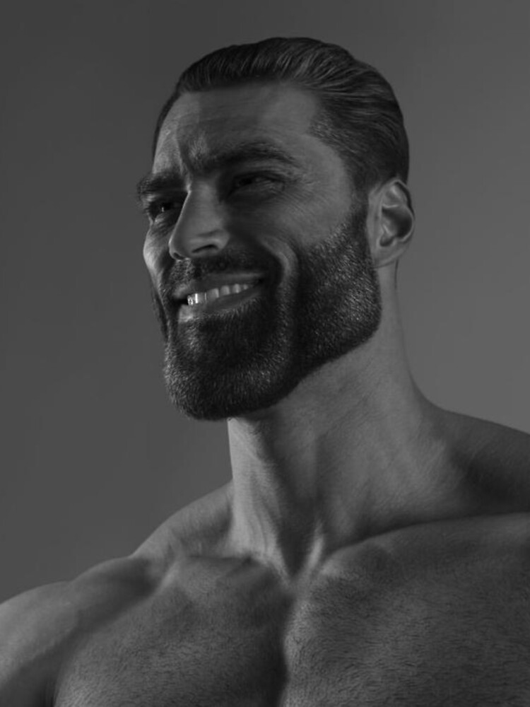

Goa is an academy where you learn programming first you start with python then web development and learn more programming langueges the creator of the school is "nika keshelava" nika keshelava is a georgian gigachad the kids that study at goa are chads nika keshelava doesnt work alone he has mentors that teach kids programming too insted of walking around to the school they study online on discord there are also groups in discord not only mentors work razmis leaders also work and mini razmis leaders this is academy changes life of a virigin kid to chad kid
visit Goa oriented academy on facebook join goa become a chad 